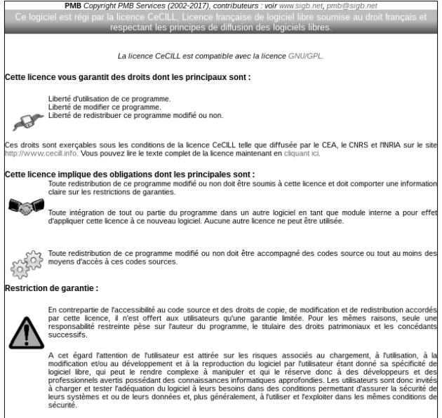

Accueil et interface de gestion
Accueil⚓
En haut de page, deux onglets sont affichés : Gestion et OPAC.
Ces onglets correspondent aux deux interfaces du logiciel :
Une interface de gestion : réservée aux utilisateurs du logiciel, bibliothécaires ou documentalistes.
Une interface OPAC : à destination des lecteurs.
Identification⚓
En page d'accueil du logiciel, un premier écran demande un nom d'utilisateur et un mot de passe.
Ce mot de passe et ce nom d'utilisateur ont été définis par votre administrateur.
Par défaut, si aucun compte utilisateur n'a été créé, connectez vous avec le nom d'utilisateur "admin" et le mot de passe "admin".
Écran de licence⚓

Une fois connecté, la licence d'utilisation du logiciel est affichée.